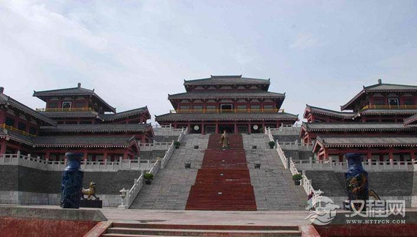
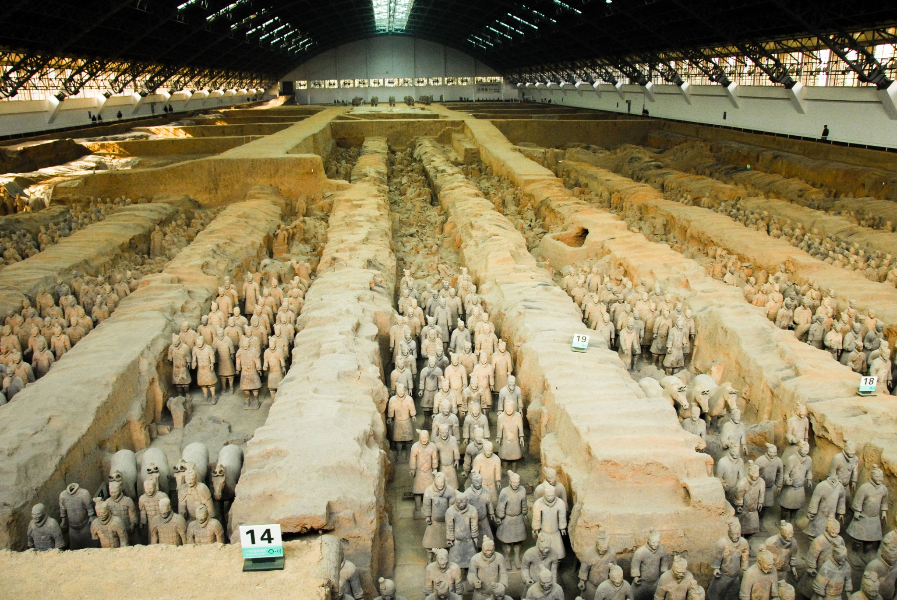
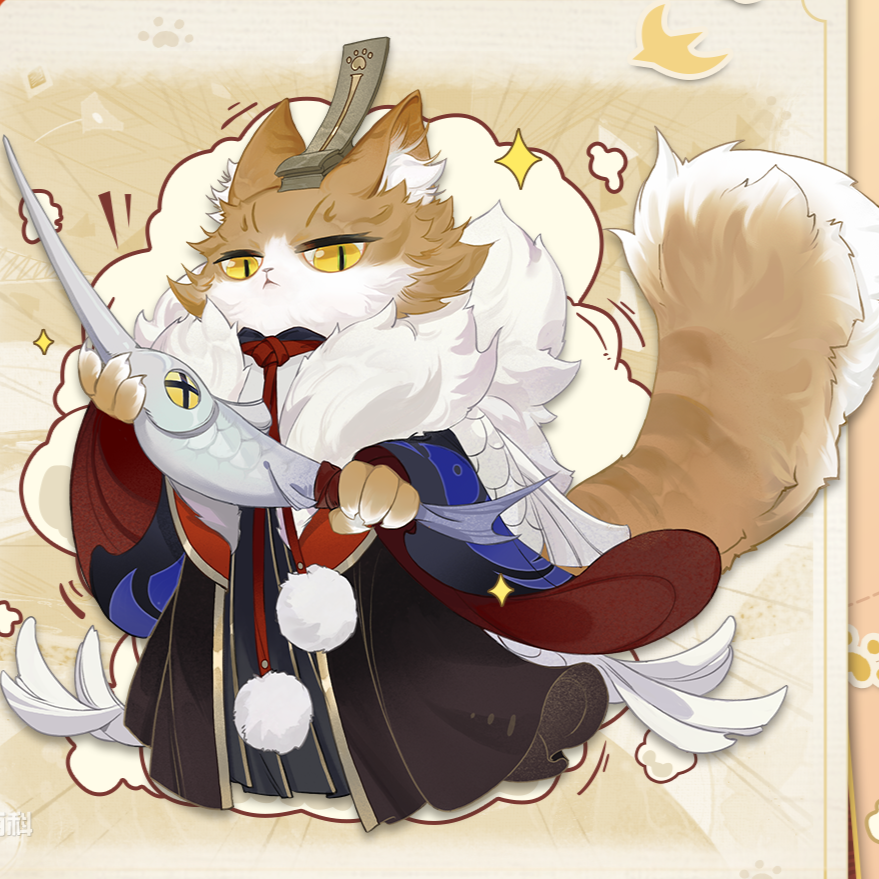

- 秦始皇（前259年2月18日—前210年7月11日），嬴姓，赵氏，名政，时称赵政（或称赵正），史书多作秦王政或始皇帝。
- 祖籍嬴城（今山东省济南市莱芜区），生于赵国首都邯郸（今河北邯郸市）
- 是秦庄襄王有一说其真实生父为吕不韦）及赵姬之子，商朝重臣恶来的第35世孙。出土《北京大学藏西汉竹书》中称其为赵正。唐代司马贞在《史记索隐》中引述《世本》称其为赵政。
- 曹植在《文帝诔》中最早称始皇帝为嬴政，后世通称嬴政，亦被某些文学作品称为“祖龙”。
- 他是战国末期秦国君主，十三岁即位，先后铲除嫪毐与吕不韦，并重用李斯、尉缭，三十九岁时灭亡六国建立秦朝，自称“始皇帝”，五十岁出巡时驾崩，在位三十七年。
秦始皇是中国史上第一位使用“皇帝”称号的君主。
统一天下后，秦始皇继承了商鞅变法的郡县制度和中央集权，统一度量衡，“车同轨，书同文，行同伦”及典章法制，奠定了中国政治史上两千余年之专制政治格局，他被明代思想家李贽誉为“千古一帝”。
但另一方面，秦始皇在位期间亦进行多项大型工程，包括修筑长城、阿房宫、骊山陵等，施政急躁，令人民徭役过重，是秦朝在他死后三年迅速灭亡的重要原因。
长城

阿房宫

骊山陵
！额外小知识！😉
|
秦始皇统一六国后，认为过去“皇”、“帝”、“王”等称号都不足以显示自己崇高的地位，因而创造出“皇帝”这个新头衔授予自己，自称“始皇帝”。
“秦始皇帝”和“始皇帝”的称谓，首见于西汉太史公司马迁的《史记》中，其中“秦始皇帝”出自《秦本纪》，而“始皇帝”则出自《秦本纪》及《秦始皇本纪》。由于秦始皇首次将“皇”和“帝”两个字结合起来，因此秦始皇的正式称谓应为“秦始皇帝”。 |

始皇喵 |